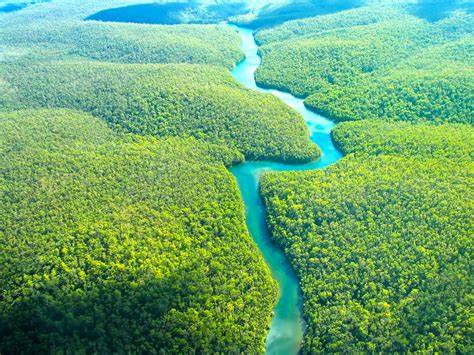
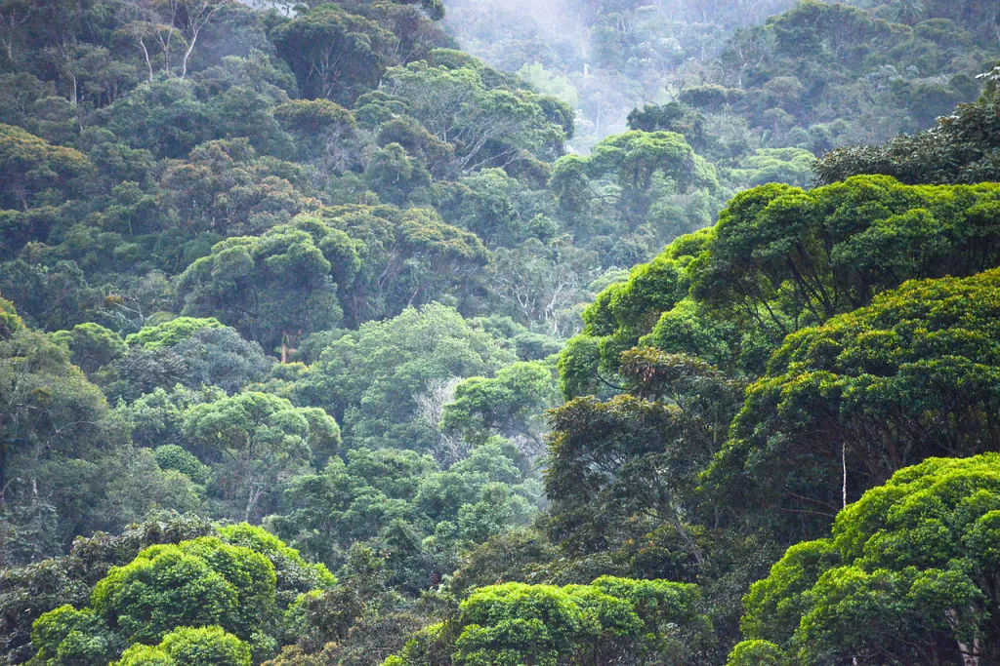
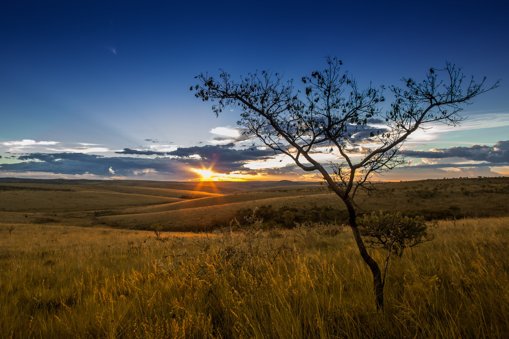
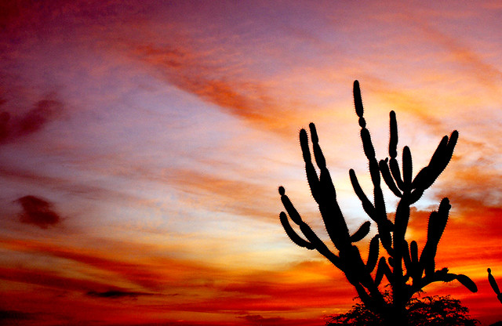
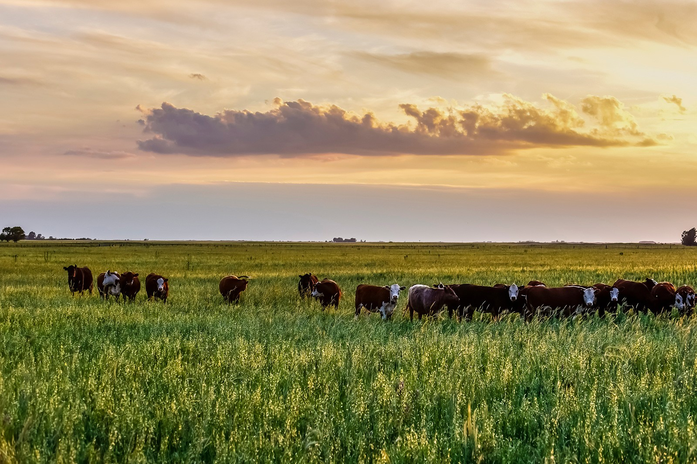
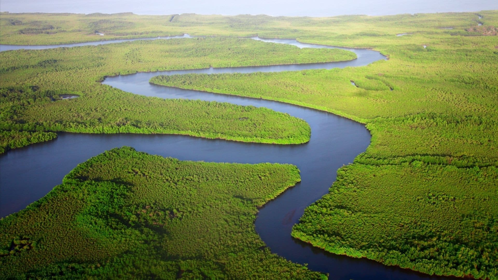

Sobre a Flora Brasileira
A flora brasileira é uma das mais ricas do mundo, com uma diversidade impressionante de espécies de plantas. O Brasil abriga aproximadamente 46.975 espécies conhecidas de plantas e fungos, incluindo muitas que são endêmicas e ameaçadas de extinção.
O projeto "Flora Brasileira" foi desenvolvido para expor o conhecimento e curiosidades presentes na catalogação e conservação da biodiversidade brasileira, reunindo esforços de milhares de taxonomistas para documentar e descrever as espécies vegetais do país.
A flora brasileira é reconhecida como uma das mais ricas e diversas do mundo, abrigando uma vasta gama de espécies vegetais em seus diferentes biomas. Com cerca de 46 mil espécies catalogadas, o Brasil possui aproximadamente 20% da biodiversidade mundial. Essa riqueza se deve em grande parte à extensão territorial do país e à variedade de ecossistemas presentes, desde florestas tropicais até regiões semiáridas.
Biomas e sua Flora Característica:
O Brasil é composto por seis biomas principais, cada um com sua flora distinta:
Amazônia
: A Floresta Amazônica abriga uma imensa diversidade de espécies vegetais.

-
mata Atlântica
A Mata Atlântica é um bioma composto por um conjunto de florestas e ecossistemas que corresponde a 15% do território brasileiro. Desde 1500, essa área vem sofrendo com o desmatamento, as queimadas e a degradação do ambiente. É por isso que, atualmente, a vegetação corresponde a apenas 7% da mata original, com árvores de médio e grande porte, constituindo uma floresta densa e fechada

-
Cerrado:
Caracterizado por uma vegetação de savana com árvores esparsas.

Caatinga:
Possui uma flora adaptada ao clima semiárido.

Pampa:
Apresenta uma flora campestre com predomínio de gramíneas.

Pantanal:
Tem uma flora influenciada pelo regime de inundações.

Importância e Ameaças
A flora brasileira possui grande importância ecológica, econômica e social. Ela fornece alimentos, madeira, fibras, medicamentos e outros produtos essenciais para a população. No entanto, enfrenta diversas ameaças como o desmatamento e a poluição.
Conclusão
A flora brasileira é um patrimônio natural inestimável, essencial para a manutenção do equilíbrio dos ecossistemas e para o desenvolvimento sustentável do país.